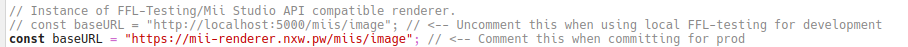
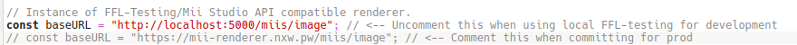

this is awful tutorial of how to run datkat21's mii creator app on linux locally. i use opensuse tumnbleweed so it might have some differences in other distros like ubuntu but im sure most of part is same
sorry for windows users but its linux tutorial idk how to do that in windows
follow the steps as listed here, , but when git clone part, you need to clone renderer server branch', like git clone --recursive --branch renderer-server-prototype https://github.com/ariankordi/FFL-Testing then enter the cloned directory with cd FFL-Testing
for installing requirements on opensuse, its zlib-devel Mesa-libGL-devel libglfw-devel
build the project using instructions then launch ffl_testing_2 as server with ./ffl_testing_2 --server then make new terminal tab. in new terminal tab, follow steps from here. do not close another tab or ffl_testing_2, otherwise it wouldn't work. i think go method is better, also python method seems like older and it didn't worked for me. just install the go with package manager then type go run . inside server-impl directory
install the bun. bun website.
make new terminal tab again, then clone the https://github.com/datkat21/mii-creator to directory you want. do not run commands yet.
you have to edit config.ts file inside src folder. open the config.ts file with text editors.
when you open up config.ts file, you'll see api url is set as https://mii-renderer.nxw.pw/miis/image, and localhost url is commented.
uncomment the localhost one then mark(or just can delete but i haven't tested)https://mii-renderer.nxw.pw/miis/image one as comment
then following the rest of steps as listed here. run bun i then run bun build-ts
add another terminal tab then run bun run serve there. now go to http://localhost:3000 then see if it worked successfully. make sure you have all of 4 terminal tabs opened and running servers
i might did wrong also im bad at writing and html this looks shit and hard to read sorry